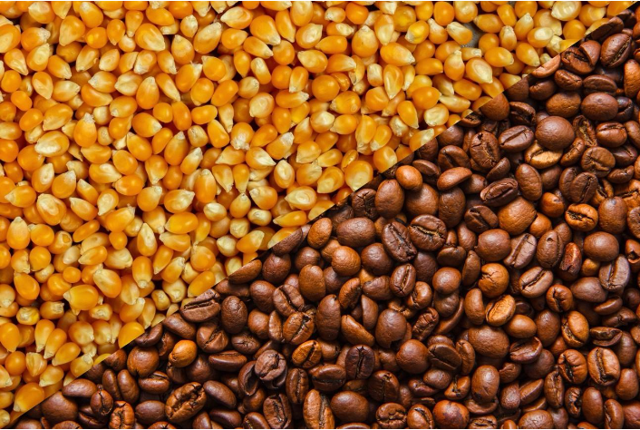
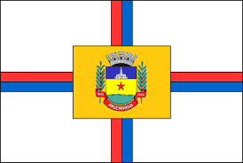
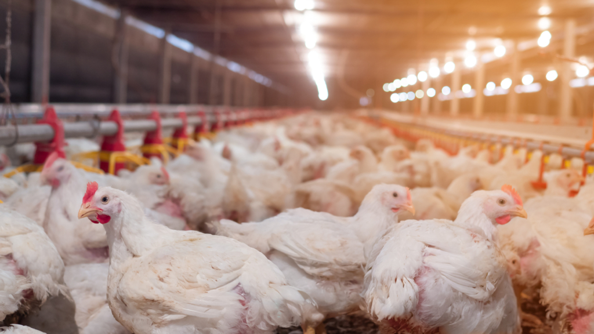

Sobre o Norte do Paraná
A região Norte do Paraná é conhecida por sua forte produção agrícola e pecuária. Conheça as principais cidades e o que elas produzem:
Londrina
Produção: Café, soja e milho.
Rolândia
Produção: Grãos e pecuária.

Apucarana
Produção: Agricultura e avicultura.
